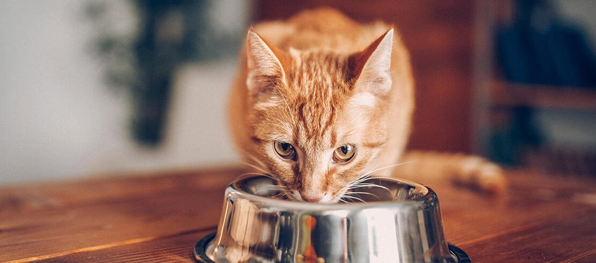

1. Provide plenty of human companionship
Cats need play sessions to engage their minds and exercise their bodies. We all know cats enjoy a good catnip-filled mouse. Here are some other fun ways to play with your cat:
- Play hide-and-seek
- Have a singing contest
- Teach it a trick
- Give it an empty box
2. Provide regular, suitable meals with a constant supply of fresh water
The number of meals a cat eats per day depends completely on the family schedule. Cats should eat at least two meals each day, about 12 hours apart. Canned food is more beneficial than dry food for several reasons. But, it is also more expensive and messier to feed.
3. Provide the cat with outdoor access or be prepared to empty and clean a litter tray on a daily basis
The best way to clean a litter box is to dump the entire box and soak it in hot water for a few minutes at least once a week. There are different types of fillers for litter tray:
- Wood fillers
- Fillers based on minerals
- Silica gel fillers
4. Groom it regularly. Longhaired cats require daily grooming
The process of grooming your cat should be fun for you and for them. Try to schedule a grooming session for a time when your cat is already calm and sleepy, such as after dinner. You should also be in a good mood — your cat will notice if you’re grumpy or stressed during the grooming session, and this can stress them out in turn.

5. Vaccinate against the major feline diseases regularly
Vaccinations are a critical part of preventive health care for your cat. Even indoor cats can be exposed to serious and potentially fatal diseases because many of the diseases that fit within the normal vaccine schedule are airborne. An open window is all it takes to expose your pet.With a series of cat vaccinations, you can ensure that your cat is protected and safe, no matter what the future holds.
6. Provide treatment for fleas
Possible options for treating fleas in cats can include:
7. Take the cat to the vet when it shows any sign of illness
Here are symptoms that should never be ignored:
- Signs of obvious distress
- Abnormal litter box behavior
- Repeated vomiting
- Overwhelming fatigue
- Sudden change in appetite
- Coughing or other breathing changes